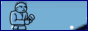
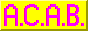
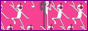
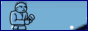
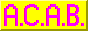
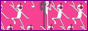

Temp Title again!!!!
lol i can fuck you alright
DUDE. WHY WOULD U SAY THAT WTF?
Homestuck is an Internet fiction series created by American author and artist Andrew Hussie. The fourth and best-known of Hussie's four MS Paint Adventures, it originally ran from April 13, 2009, to April 13, 2016. Though normally described as a webcomic, and partly constituted by a series of single panel pages, Homestuck also relied heavily on Flash animations and instant message logs to convey its story, along with the occasional use of browser games.
Its plot centers on a group of teens who trigger the inevitable destruction of Earth by installing the beta version of an upcoming PC game, Sburb. The teens soon come into contact with a group of Internet trolls who are revealed to be horned aliens, and these trolls work with the kids to create a new universe by completing the game. It has been noted for its complex and nonlinear plot, considerable length at over 8,000 pages and 800,000 words, and intensely devoted fan community.
The success of Homestuck has resulted in numerous related projects and sequels, including the Hiveswap series of adventure games.


   
  